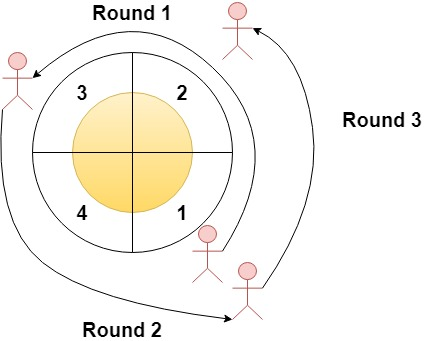

| Category | Difficulty | Likes | Dislikes |
|---|---|---|---|
| Algorithms | Easy | 335 | 669 |
expedia
Given an integer n and an integer array rounds. We have a circular track which consists of n sectors labeled from 1 to n. A marathon will be held on this track, the marathon consists of m rounds. The ith round starts at sector rounds[i - 1] and ends at sector rounds[i]. For example, round 1 starts at sector rounds[0] and ends at sector rounds[1]
Return an array of the most visited sectors sorted in ascending order.
Notice that you circulate the track in ascending order of sector numbers in the counter-clockwise direction (See the first example).
Example 1:

Input: n = 4, rounds = [1,3,1,2]
Output: [1,2]
Explanation: The marathon starts at sector 1. The order of the visited sectors is as follows:
1 --> 2 --> 3 (end of round 1) --> 4 --> 1 (end of round 2) --> 2 (end of round 3 and the marathon)
We can see that both sectors 1 and 2 are visited twice and they are the most visited sectors. Sectors 3 and 4 are visited only once.Example 2:
Input: n = 2, rounds = [2,1,2,1,2,1,2,1,2]
Output: [2]Example 3:
Input: n = 7, rounds = [1,3,5,7]
Output: [1,2,3,4,5,6,7]
Constraints:
2 <= n <= 1001 <= m <= 100rounds.length == m + 11 <= rounds[i] <= nrounds[i] != rounds[i + 1] for 0 <= i < m